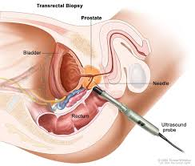
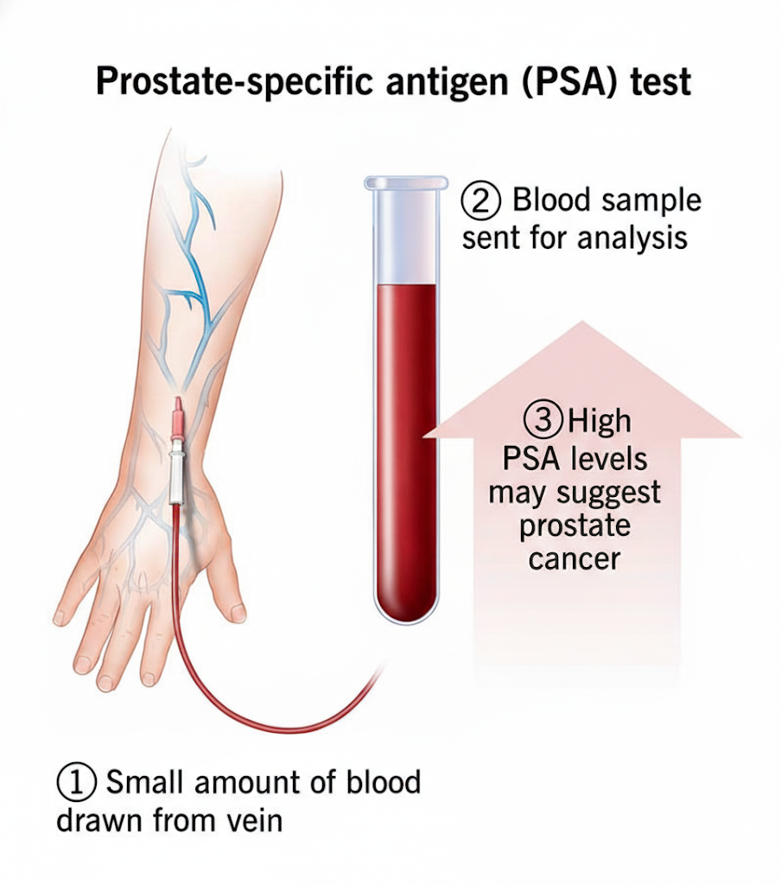
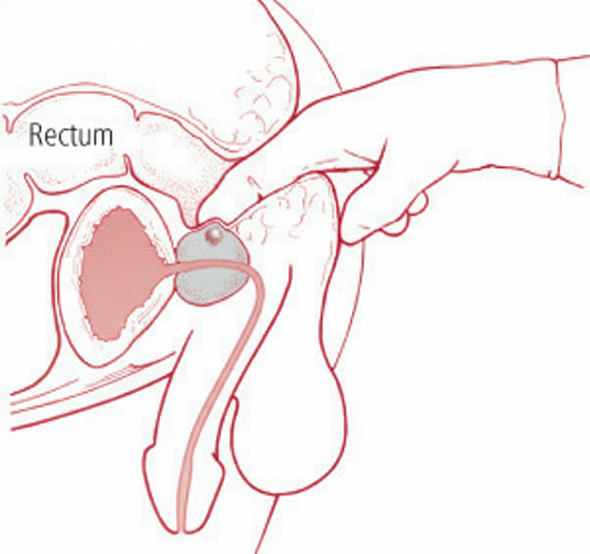
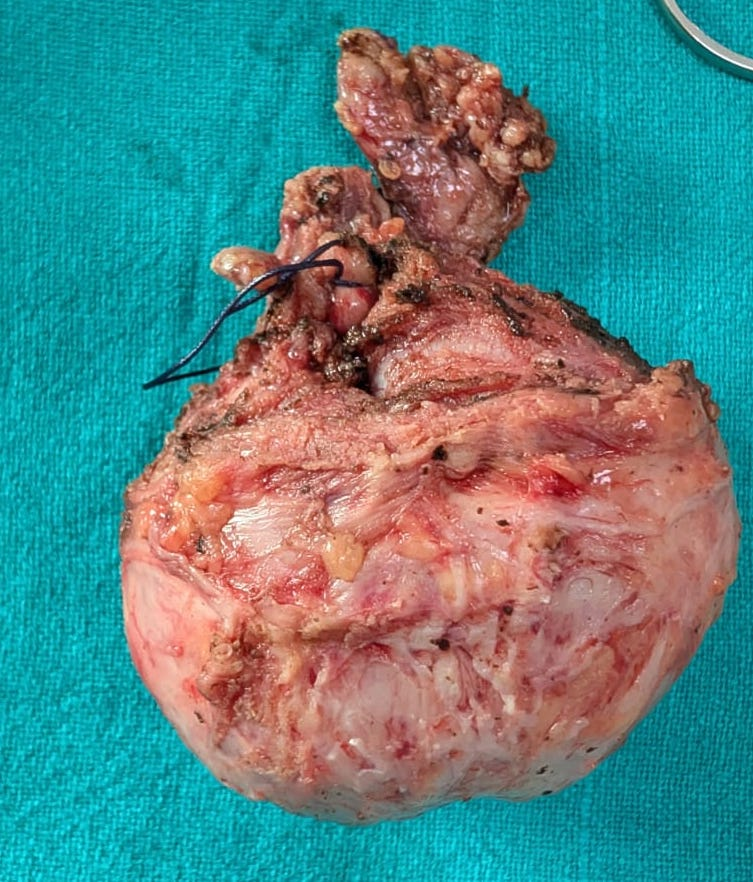

Prostate Cancer
Prostate cancer
Understanding Prostate Cancer
Prostate cancer is a type of cancer that develops in the prostate gland, a small walnut-sized gland in men that produces seminal fluid. It's one of the most common cancers among men, but with early detection and advancements in treatment, the prognosis is often very good.
The Prostate Gland: A Quick Look
The prostate gland is located just below the bladder and in front of the rectum. The urethra, the tube that carries urine and semen out of the body, runs through the center of the prostate.
What Causes Prostate Cancer?
The exact cause of prostate cancer isn't fully understood, but several risk factors have been identified:
Age: The risk of prostate cancer increases significantly with age, especially after 50.
Family History: If a close male relative (father, brother, son) had prostate cancer, your risk might be higher.
Race: African American men have a higher risk of developing prostate cancer and are more likely to develop aggressive forms of the disease.
Genetics: Certain inherited gene mutations, like BRCA1 and BRCA2, can increase the risk.
Diet: A diet high in red meat and high-fat dairy products, and low in fruits and vegetables, may contribute to an increased risk.
Symptoms to Watch For
In its early stages, prostate cancer often has no symptoms. As it progresses, some men may experience:
Frequent urination, especially at night
Difficulty starting or stopping urination
Weak or interrupted flow of urine
Pain or burning during urination
Blood in urine or semen
Painful ejaculation
Persistent pain in the back, hips, or pelvis
If you experience any of these symptoms, it's crucial to see a doctor for evaluation.
Diagnosis: How is Prostate Cancer Detected?
Several methods are used to diagnose prostate cancer:
Prostate-Specific Antigen (PSA) Blood Test: This test measures the level of PSA, a protein produced by the prostate gland. Elevated PSA levels can indicate prostate cancer, but also other benign conditions.
Digital Rectal Exam (DRE): A doctor manually examines the prostate through the rectum to check for abnormalities.
Biopsy: If PSA levels are high or a DRE reveals suspicious findings, a biopsy is performed. This involves taking small tissue samples from the prostate for microscopic examination.
Treatment Options
Treatment for prostate cancer depends on several factors, including the stage of cancer, overall health, and personal preferences. Options may include:
Active Surveillance: For very low-risk cancers, doctors may recommend closely monitoring the cancer without immediate treatment.
Surgery (Radical Prostatectomy): Surgical removal of the prostate gland.
Radiation Therapy: Using high-energy rays to kill cancer cells. This can be external beam radiation or brachytherapy (placing radioactive seeds in the prostate).
Hormone Therapy: Reducing the levels of male hormones (androgens) that can fuel prostate cancer growth.
Chemotherapy: Using drugs to kill cancer cells throughout the body, usually for more advanced cases.
Targeted Therapy: Drugs that target specific weaknesses in cancer cells.
Prevention and Early Detection
While not all prostate cancers are preventable, you can take steps to reduce your risk and improve your chances of early detection:
Maintain a Healthy Diet: Eat plenty of fruits, vegetables, and whole grains. Limit red meat and high-fat dairy.
Regular Exercise: Stay physically active.
Maintain a Healthy Weight: Obesity can increase your risk.
Talk to Your Doctor: Discuss your personal risk factors and when you should begin prostate cancer screenings.




Prostate cancer is one of the common cancers in Men. Diagnosis of prostate cancer can be stressful and life changing. Availability-well trained and best robotic surgeon in Jaipur such as Dr Gopal Sharma have made treatment of this disease better. He brings in wealth of experience in robotic surgery for prostate cancer i.e. robotic radical prostatectomy. Dr Gopal Sharma has also performed more than 500 prostate biopsies to diagnose prostate cancer in Agra.